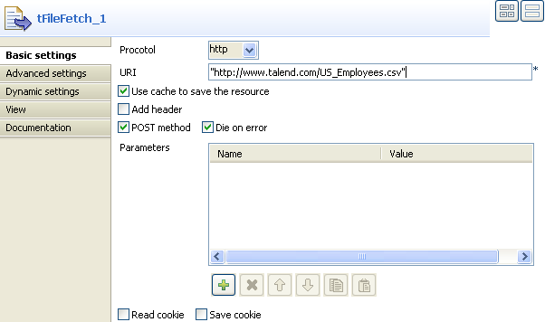

|
Component family |
File/Input | |
|
Function |
tFileInputDelimited reads a given file row by row with simple separated fields. Opens a file and reads it row by row to split them up into fields then sends fields as defined in the Schema to the next Job component, via a Row link. | |
|
Purpose | ||
|
Basic settings |
Property type |
Either Built-in or Repository. |
|
|
|
Built-in: No property data stored centrally. |
|
|
|
Repository: Select the repository file where the properties are stored. The fields that follow are completed automatically using the data retrieved. |
|
|
File Name/Stream |
File name: Name and path of the file to be processed. Stream: The data flow to be processed. The data must be added to the flow in order for tFileInputDelimited to fetch these data via the corresponding representative variable. This variable could be already pre-defined in your Studio or provided by the context or the components you are using along with this component; otherwise, you could define it manually and use it according to the design of your Job, for example, using tJava or tJavaFlex. In order to avoid the inconvenience of hand writing, you could select the variable of interest from the auto-completion list (Ctrl+Space) to fill the current field on condition that this variable has been properly defined.
Related topic to the available variables: see Talend Open Studio User Guide |
|
|
Row separator |
String (ex: “\n”on Unix) to distinguish rows. |
|
|
Field separator |
Character, string or regular expression to separate fields. |
|
|
CSV options |
Select this check box to include CSV specific parameters such as Escape char and Text enclosure. |
|
|
Header |
Number of rows to be skipped in the beginning of file.
|
|
|
Footer |
Number of rows to be skipped at the end of the file. |
|
|
Limit |
Maximum number of rows to be processed. If Limit = 0, no row is read or processed. |
|
|
Schema and Edit Schema |
A schema is a row description, i.e., it defines the number of fields that will be processed and passed on to the next component. The schema is either Built-in or stored remotely in the Repository. Click Edit Schema to make changes to the schema. Note that if you make changes, the schema automatically becomes Built-in. Click Sync columns to retrieve the schema from the previous component connected in the Job.
|
|
|
|
Built-in: The schema will be created and stored locally for this component only. Related topic: see Talend Open Studio User Guide. |
|
|
|
Repository: The schema already exists and is stored in the Repository, hence can be reused in various projects and Job flowcharts. Related topic: see Talend Open Studio User Guide. |
|
|
Skip empty rows |
Select this check box to skip empty rows. |
|
|
Uncompress as zip file |
Select this check box to uncompress the input file. |
|
|
Die on error |
Select this check box to stop the execution of the Job when an error occurs. Clear the check box to skip the row on error and complete the process for error-free rows. If needed, you can collect the rows on error using a Row > Reject link. To catch the |
|
Advanced settings |
Advanced separator (for numbers) |
Select this check box to modify the separators used for numbers: Thousands separator: define separators for thousands. Decimal separator: define separators for decimals. |
|
|
Extract lines at random |
Select this check box to set the number of lines to be extracted randomly. |
|
|
Encoding |
Select the encoding type from the list or select Custom and define it manually. This field is compulsory for DB data handling. |
|
|
Trim all column |
Select this check box to remove leading and trailing whitespace from all columns. |
|
|
Check each row structure against schema |
Select this check box to synchronize every row against the input schema. |
|
|
Check date |
Select this check box to check the date format strictly against the input schema. |
|
|
Check columns to trim |
Select the check box next to the column name you want to remove leading and trailing whitespace from. |
|
|
Split row before field |
Select this check box to split rows before splitting fields. |
|
|
tStatCatcher Statistics |
Select this check box to gather the processing metadata at the Job level as well as at each component level. |
|
Usage |
Use this component to read a file and separate fields contained in this file using a defined separator. It allows you to create a data flow using a Row > Main link or via a Row > Reject link in which case the data is filtered by data that does not correspond to the type defined. For further information, please see the section called “Scenario 2: Extracting correct and erroneous data from an XML field in a delimited file”. | |
| Limitation |
n/a | |
The following scenario creates a two-component Job, which aims at reading each row of a file, selecting delimited data and displaying the output in the Run log console.

Drop a tFileInputDelimited component and a tLogRow component from the Palette to the design workspace.
Right-click on the tFileInputDelimited component and select Row > Main. Then drag it onto the tLogRow component and release when the plug symbol shows up.
Select the tFileInputDelimited component again, and define its Basic settings:

Fill in a path to the file in the File Name field. This field is mandatory.
Warning
If the path of the file contains some accented characters, you will get an error message when executing your Job. For more information regarding the procedures to follow when the support of accented characters is missing, see the Talend Installation and Upgrade Guide of the Talend Solution you are using.
Define the Row separator allowing to identify the end of a row. Then define the Field separator used to delimit fields in a row.
In this scenario, the header and footer limits are not set. And the Limit number of processed rows is set on 50.
Set the Schema as either a local (Built-in) or a remotely managed (Repository) to define the data to pass on to the tLogRow component.
You can load and/or edit the schema via the Edit Schema function.
Related topics: see Talend Open Studio User Guide.
Enter the encoding standard the input file is encoded in. This setting is meant to ensure encoding consistency throughout all input and output files.
Select the tLogRow and define the Field separator to use for the output display. Related topic: the section called “tLogRow”.
Select the Print schema column name in front of each value check box to retrieve the column labels in the output displayed.
Press Ctrl+S to save your Job.
Go to Run tab, and click on Run to execute the Job.
The file is read row by row and the extracted fields are displayed on the Run log as defined in both components Basic settings.

The Log sums up all parameters in a header followed by the result of the Job.
This scenario describes a four component Job used to fetch data from a voluminous file almost as soon as it has been read. The data is displayed in the Run view. The advantage of this technique is that you do not have to wait for the entire file to be downloaded, before viewing the data.

Drop the following components onto the workspace: tFileFetch, tSleep, tFileInputDelimited, and tLogRow.
Connect tSleep and tFileInputDelimited using a Trigger > OnComponentOk link and connect tFileInputDelimited to tLogRow using a Row > Main link.
Double-click tFileFetch to display the Basic settings tab in the Component view and set the properties.
From the Protocol list, select the appropriate protocol to access the server on which your data is stored.
In the URI field, enter the URI required to access the server on which your file is stored.
Select the Use cache to save the resource check box to add your file data to the cache memory. This option allows you to use the streaming mode to transfer the data.
In the workspace, click tSleep to display the Basic settings tab in the Component view and set the properties.
By default, tSleep’s Pause field is set to 1 second. Do not change this setting. It pauses the second Job in order to give the first Job, containing tFileFetch, the time to read the file data.
In the workspace, double-click tFileInputDelimited to display its Basic settings tab in the Component view and set the properties.

In the File name/Stream field:
- Delete the default content.
- Press Ctrl+Space to view the variables available for this component.
- Select tFileFetch_1_INPUT_STREAM from the auto-completion list, to add the following variable to the Filename field:
((java.io.InputStream)globalMap.get("tFileFetch_1_INPUT_STREAM")).From the Schema list, select Built-in and click [...] next to the Edit schema field to describe the structure of the file that you want to fetch. The US_Employees file is composed of six columns: ID, Employee, Age, Address, State, EntryDate.
Click [+] to add the six columns and set them as indicated in the above screenshot. Click OK.

In the workspace, double-click tLogRow to display its Basic settings in the Component view and click Sync Columns to ensure that the schema structure is properly retrieved from the preceding component.
Click the Job tab and then on the Extra view.

Select the Multi thread execution check box in order to run the two Jobs at the same time. Bear in mind that the second Job has a one second delay according to the properties set in tSleep. This option allows you to fetch the data almost as soon as it is read by tFileFetch, thanks to the tFileDelimited component.
Save the Job and press F6 to run it.

The data is displayed in the console as almost as soon as it is read.